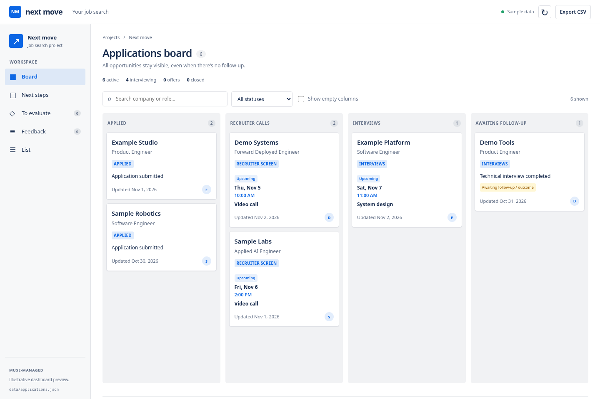

Personal tool / AI-assisted development
NextMove

From email to a dashboard
I built NextMove for my own workflows. Instead of digging through my inbox to find the information I need, I use Muse to review my email every day and move the relevant data into a dashboard.
How I use it
- Read the inbox. Muse checks my email each day for relevant updates.
- Organize the information. It extracts the useful details and turns them into structured data.
- Update the dashboard. That data moves into NextMove, where I can review it in one place and decide what to do next.
Building tools for myself
NextMove is an example of how I build tools with AI: start with a real problem in my day-to-day life, build a small tool with AI, and keep improving it as I use it. Muse handles the repetitive information-gathering; the dashboard gives me a straightforward interface for making decisions.
The app is private. This page describes the workflow without sharing email contents or personal dashboard data.